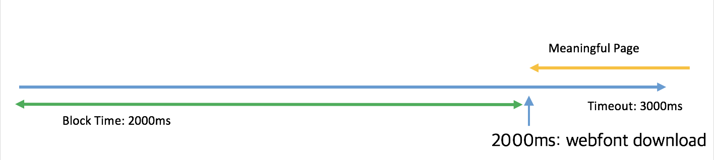
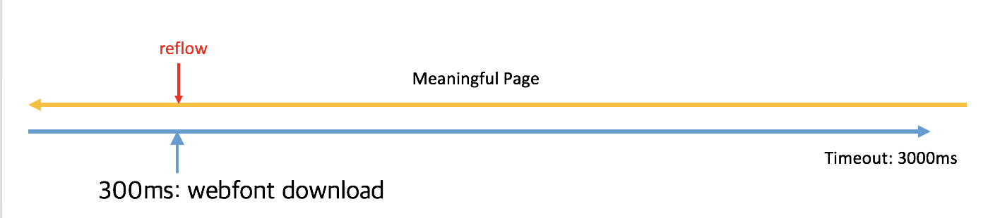
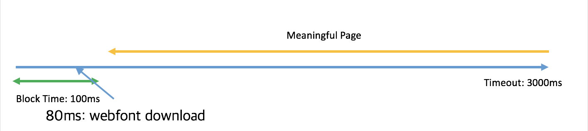
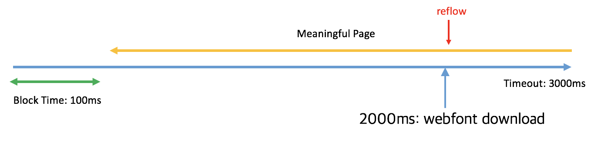

Font reflow can hurt the layout, and UX in the end
General Timelines
FOIT

FOUT

Suppress the FOIT / Reduce the FOUT
CSS solution: font-display
@font-face
auto - basic behavior of the browser
block - FOIT, no text until font render
swap - Instructs the browser to use the fallback font to
display the text until the custom font has fully downloaded.
This is also known as a “flash of unstyled text” or FOUT.
fallback - gives the font face an extremely small block
period (100ms or less is recommended in most cases) and a
short swap period (three seconds is recommended in most
cases). In other words, the font face is rendered with a
fallback at first if it’s not loaded, but the font is
swapped as soon as it loads. However, if too much time
passes, the fallback will be used for the rest of the page’s
lifetime. fallback is a good candidate for things like body
text where you’d like the user to start reading as soon as
possible and don’t want to disturb their experience by
shifting text around as a new font loads in.
optional - gives the font face an extremely small block
period (100ms or less is recommended in most cases) and a
zero second swap period. Similar to fallback, this is a good
choice for when the downloading font is more of a “nice to
have” but not critical to the experience. The optional value
leaves it up to the browser to decide whether to initiate
the font download, which it may choose not to do or it may
do it as a low priority depending on what it thinks would be
best for the user. This can be beneficial in situations
where the user is on a weak connection and pulling down a
font may not be the best use of resources.
Fallback could be a great option
Fallback timeline


Downsides
Cannot customize swap time and block time
Cannot get callback by font diff event
100ms sometimes is not enough for heavy font(foreign language)
Not recommended ways to handle them
data URI
Get font via data URI
Able to avoid both FOIT and FOUT
But blocks CSS parsing, slow down the whole page render
Could occur a serious speed issue if the font itself is heavy
local/session storage
Save the font file as data URI
Async, no blocker for page load, but could affect performance
Google officially discourage this solution
FOFT
Flash of Faux Text
Split the subset, get normal font first, and apply fake font for bold and italic
Fast loading speed, but UI will flash TWICE
Hard to maintain the font-family - need seperate naming convention for each styles
FOIT with 3s Timeout
This is not light weight
This is a paragraph.This is heavier text.This is emphasized text.This is heavier and emphasized text.
FOUT
This is not light weight
This is a paragraph.This is heavier text.This is emphasized text.This is heavier and emphasized text.